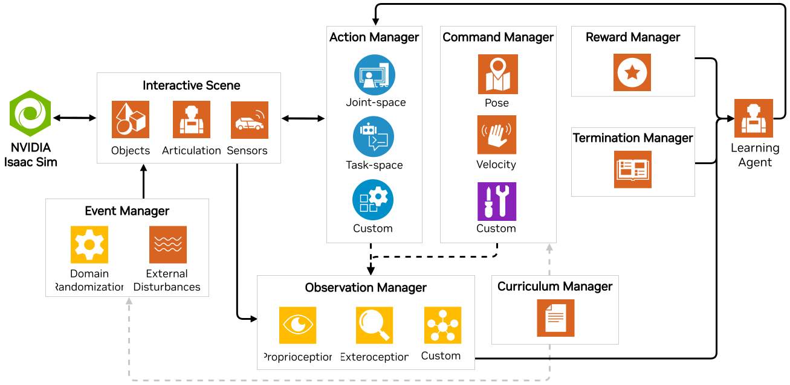

任务设计工作流程#
一个 Task 是由一个环境定义的，该环境具有特定的接口，用于接收来自特定智能体（机器人）的观测和执行该智能体的动作。环境提供给智能体当前的观测，并通过将仿真向前推进来执行智能体的动作。无论您希望机器人做什么，或它如何被训练去做，都有许多常见的组件来仿真机器人在环境中的表现。
这在强化学习（RL）中尤为明显，在一个向量化的 GPU 仿真中管理动作、观测、奖励等内容，即使是想一想也让人感到望而生畏！为了满足这一需求，Isaac Lab 提供了在我们的 Manager-based 系统中构建 RL 环境的能力，允许你信任各种适当的管理类的细节。然而，我们也认识到在开发过程中对环境进行精细控制的需求。为此，我们还提供了一个 Direct 接口进入仿真，赋予你完全的控制权！
基于管理器: 环境被分解为单独的组件（或管理器），这些组件处理环境的不同方面（例如计算观测、应用动作和应用随机化）。用户为每个组件定义配置类，环境负责协调管理器并调用它们的函数。
直接式: 用户定义一个单一类，该类直接实现整个环境，而无需单独的管理器。这个类负责计算观测、应用动作和计算奖励。
两个工作流程各有优缺点。基于管理器的工作流程更具模块化，允许环境的不同组件轻松更换。这在原型环境和实验不同配置时非常有用。另一方面，直接式工作流程更高效，允许对环境逻辑进行更细粒度的控制。这在优化环境性能或实现复杂逻辑时非常有用，而这些复杂逻辑难以拆分为独立组件。
基于管理器的环境#

基于管理器的环境通过将任务分解为单独管理的组件，促进了任务的模块化实现。任务的每个组件，例如计算奖励、观测等，可以作为相应管理器的配置来指定。这些管理器定义了可配置的函数，负责在需要时执行特定的计算。不同管理器的协调由继承自 envs.ManagerBasedEnv 的环境类来处理。配置同样必须全部继承自 envs.ManagerBasedEnvCfg 。
在开发新的训练环境时，将环境分解为独立的组件通常是有益的。这对于协作非常有效，因为它允许个别开发人员专注于环境的不同方面，同时允许将这些不同的努力重新组合成一个单独的可执行任务。例如，您可能有多个具有不同感官系统的机器人，要求不同的观测管理器将这些传感数据处理成对下游组件有用的形式。您可能有多个团队成员，他们对于实现目标的奖励应该是什么有不同的看法，通过让每个人开发自己的奖励管理器，您可以根据需要进行替换和测试。管理器工作流的模块化特性对于更复杂的项目至关重要！
对于强化学习，很多工作已经为您完成！在大多数情况下，您只需要编写您的环境继承自 envs.ManagerBasedRLEnv ，并且您的配置继承自 envs.ManagerBasedRLEnvCfg 。
用于使用管理器样式定义Cartpole任务的奖励函数的示例
以下类是 Cartpole 环境配置类的一部分。 RewardsCfg 类定义了构成奖励函数的各个项。每个奖励项由其函数实现、权重和要传递给函数的附加参数定义。用户可以定义多个奖励项及其权重，以用于奖励函数。
@configclass
class RewardsCfg:
"""Reward terms for the MDP."""
# (1) Constant running reward
alive = RewTerm(func=mdp.is_alive, weight=1.0)
# (2) Failure penalty
terminating = RewTerm(func=mdp.is_terminated, weight=-2.0)
# (3) Primary task: keep pole upright
pole_pos = RewTerm(
func=mdp.joint_pos_target_l2,
weight=-1.0,
params={"asset_cfg": SceneEntityCfg("robot", joint_names=["cart_to_pole"]), "target": 0.0},
)
# (4) Shaping tasks: lower cart velocity
cart_vel = RewTerm(
func=mdp.joint_vel_l1,
weight=-0.01,
params={"asset_cfg": SceneEntityCfg("robot", joint_names=["slider_to_cart"])},
)
# (5) Shaping tasks: lower pole angular velocity
pole_vel = RewTerm(
func=mdp.joint_vel_l1,
weight=-0.005,
params={"asset_cfg": SceneEntityCfg("robot", joint_names=["cart_to_pole"])},
)
参见
我们为使用基于管理器的工作流设置环境提供了更详细的教程，位于 创建基于管理器的强化学习环境 。
直接式的环境#


直接风格环境与其他库中环境的传统实现更为接近。一个单一的类实现了奖励函数、观测函数、重置函数以及环境的所有其他组件。该方法不需要管理类。相反，用户可以通过 envs.DirectRLEnv 或 envs.DirectMARLEnv 的 API 完全自由地实现他们的任务。所有直接任务环境必须继承这两个类中的一个。直接环境仍然需要定义配置，具体来说是通过继承 envs.DirectRLEnvCfg 或 envs.DirectMARLEnvCfg 。对于从 IsaacGymEnvs 和 OmniIsaacGymEnvs 框架迁移过来的用户来说，这种工作流程可能是最熟悉的。
为 Cartpole 任务定义奖励函数的示例，使用直接式风格
以下函数是Cartpole环境类的一部分，负责计算奖励。
def _get_rewards(self) -> torch.Tensor:
total_reward = compute_rewards(
self.cfg.rew_scale_alive,
self.cfg.rew_scale_terminated,
self.cfg.rew_scale_pole_pos,
self.cfg.rew_scale_cart_vel,
self.cfg.rew_scale_pole_vel,
self.joint_pos[:, self._pole_dof_idx[0]],
self.joint_vel[:, self._pole_dof_idx[0]],
self.joint_pos[:, self._cart_dof_idx[0]],
self.joint_vel[:, self._cart_dof_idx[0]],
self.reset_terminated,
)
return total_reward
它调用了 compute_rewards() 函数，该函数经过Torch JIT编译以获得性能优势。
@torch.jit.script
def compute_rewards(
rew_scale_alive: float,
rew_scale_terminated: float,
rew_scale_pole_pos: float,
rew_scale_cart_vel: float,
rew_scale_pole_vel: float,
pole_pos: torch.Tensor,
pole_vel: torch.Tensor,
cart_pos: torch.Tensor,
cart_vel: torch.Tensor,
reset_terminated: torch.Tensor,
):
rew_alive = rew_scale_alive * (1.0 - reset_terminated.float())
rew_termination = rew_scale_terminated * reset_terminated.float()
rew_pole_pos = rew_scale_pole_pos * torch.sum(torch.square(pole_pos).unsqueeze(dim=1), dim=-1)
rew_cart_vel = rew_scale_cart_vel * torch.sum(torch.abs(cart_vel).unsqueeze(dim=1), dim=-1)
rew_pole_vel = rew_scale_pole_vel * torch.sum(torch.abs(pole_vel).unsqueeze(dim=1), dim=-1)
total_reward = rew_alive + rew_termination + rew_pole_pos + rew_cart_vel + rew_pole_vel
return total_reward
这种方法提供了更高的透明度，因为逻辑在任务类中定义，而不是通过管理器进行抽象。当实现复杂的逻辑时，这可能是有益的，因为这些逻辑难以分解成独立的组件。此外，直接式风格的实现可能会为环境带来更多的性能收益，因为它允许使用优化框架，如 PyTorch JIT 或 Warp 来实现大量逻辑。当需要大规模训练并优化环境中的单个操作时，这可能是有价值的。
参见
我们为使用直接式工作流程设置强化学习环境提供了更详细的教程，可参考 创建直接工作流RL环境 。